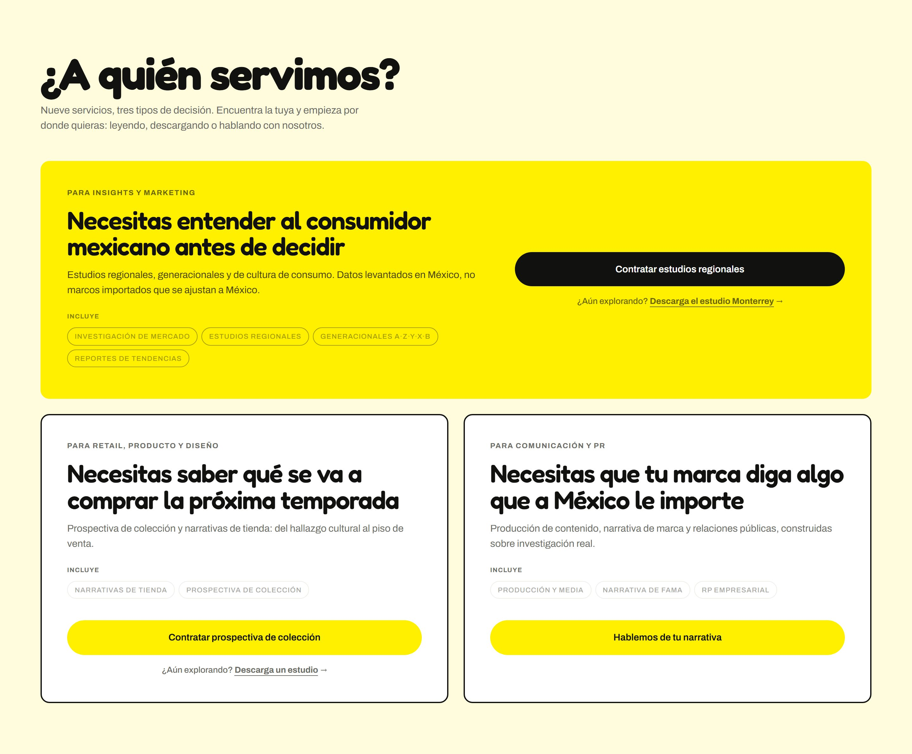
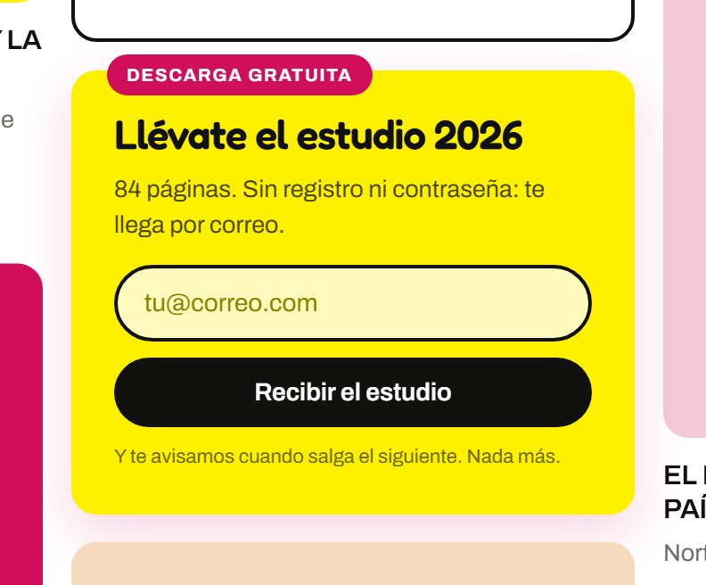
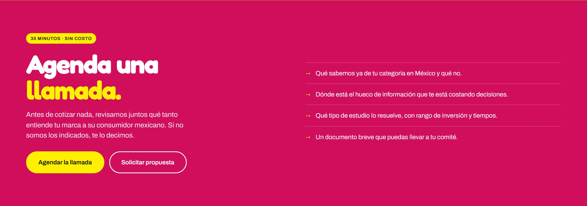
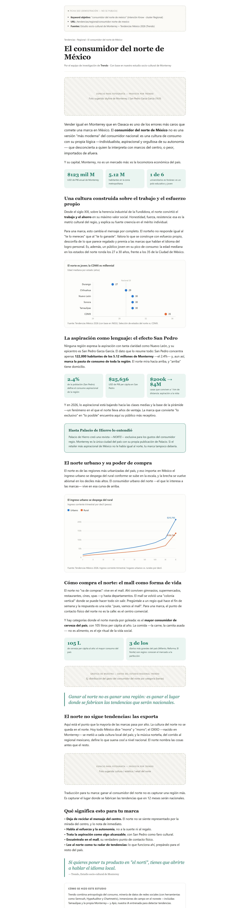

Unoptimized platform, broken and non-descriptive URLs, abandoned sitemap sections.
Digital strategy and site redesign for a Mexican consumer-trends agency that produces the best research in its sector and is invisible in search. The work here is the diagnosis, the funnel architecture, and the design direction that came out of them.
This is an approved proposal in execution planning, not a launched site. Every screen shown here is a working prototype, and the numbers are baseline measurements of the client's current site taken before any work shipped. Nothing on this page claims a result — the honest version of this project is the diagnosis and the architecture, and those are what it documents. Commercial terms and client names are omitted.
The agency's problem was not quality. It was that its research lived in PDFs behind a login, where neither search engines nor language models can read it, and the site did not rank for its own subject. Search the topic this agency has spent years owning, and you find global consultancies and media agencies instead.
The audit put overall SEO health at roughly 5 out of 10, and the shape of that score is the interesting part: strong brand, weak technical base. Around ten indexed pages. No meta descriptions on any page audited. A flagship landing page with no H1 and roughly 180 words on it. A sitemap still listing sections last touched in 2020, and a blog that stopped in late 2024.
Unoptimized platform, broken and non-descriptive URLs, abandoned sitemap sections.
The reports are the asset, and they are unreadable to search. The blog has been dormant since 2024.
The one thing that is genuinely hard to build is already there — and it is being wasted.
No schedulable call, no proposal flow, and a login standing between a lead and the thing they came for.
Two different questions get confused constantly. Authority asks whether the web vouches for you. Relevance asks whether you appear when your market searches for your subject. This agency scores decently on the first and almost nothing on the second — which is the best possible shape for the problem to have, because authority is the half that takes years to earn.
The public relations work did translate into real referring domains. Nearly two hundred of them, pointing at about ten pages. The organic traffic that exists is essentially all branded: people arrive because they already know the name, not because they discovered the topic. Ranking keywords sit in the low hundreds with almost no non-branded traffic behind them, and share of the relevant search space rounds to zero.
465 backlinks pointing at roughly 10 pages
Branded and organic lines move together
134 ranking keywords, ~0 non-branded traffic
The figure that reframed the whole engagement did not come from any analytics tool. It came from the client, buried in a quote from months earlier: the agency records roughly forty thousand PDF downloads a year, behind a login, with no usable email capture attached.
That changes the diagnosis from a traffic problem into a capture problem. Forty thousand people a year explicitly ask for this agency's research, and the agency keeps almost none of them. Read alongside the finding that branded and organic traffic move as one line, the implication is that essentially all of that demand arrives through rented channels — social platforms — and switches off the day an algorithm changes.
Replacing the login with an email gate is not a conversion tweak. It is the difference between an audience the agency owns and one it borrows.
The primary persona is an insights or marketing lead inside a large Mexican consumer brand. Her job is to keep her organization from misreading the consumer, and she is squeezed from above by budget and ROI questions and from below by brand and product teams wanting fast answers. She reads a great deal of trend content and almost all of it tastes like a generic roundup built on an imported framework.
The design consequence is specific and it governs the whole architecture: she is the champion, not the signatory. A CMO signs the budget, procurement negotiates, and brand teams are the end users. So the content cannot only persuade her — it has to give her something she can forward. A case she can send to her CMO. A page that says "this is what we do for a brand like yours." That requirement is why the architecture treats proof as a destination rather than a logo strip.
Defines the need and carries it internally. Fears being sold a framework with no Mexican reality behind it.
Judges on ROI and reputational risk. Never visits the site — reads whatever gets forwarded.
Need the research to be actionable, not merely interesting. "What do I do with this on Monday."
Auditing each funnel stage against that persona — does this move her one step forward? — produced a harsher score than the SEO audit did, and a more useful one. The site is not underperforming evenly; it is missing its mouth.
Five leaks, in order of what they cost. The expensive one is at the entrance: someone searching the topic never encounters this agency at all, and leaves with a global consultancy instead. Second, an enormous social audience with no destination that converts. Third, the people who do arrive — already knowing the brand — cannot assemble an internal case, and stall. Fourth, the friction of a login on the reports plus no easy way to say "let's talk." Fifth, nothing continuous to keep her engaged, so no repeat business and no referrals.
The hook exists and is invisible — sealed inside PDFs behind a login.
The proof exists but sits loose: clients as logos rather than cases, services in one undifferentiated block.
No schedulable call, no proposal flow, no ROI framing — and a login in the way.
A newsletter with no engine behind it, because the blog stopped two years ago.
The architecture is derived from the funnel and the persona rather than patched onto the existing site. The audit is used only to decide what gets built first — it does not constrain what gets designed.
Its load-bearing idea is that the agency's research gets packaged three ways for three different visitors. Articles are the magnet: open, indexable, informational, written to be found. Reports are the hook: the complete study, gated behind an email — the article is the appetizer, the report is the plate. Services are the sales machine: they do not educate, they sell, one page per service framed by the business problem it solves.
Two rules keep it from drifting. Content links forward, never back — an article leads to services; a service does not lead back to the blog. And the site never sends traffic out to social: consumers live on social, the B2B market that signs contracts lives on the site. A video gets embedded, never linked away to.
Partway through the design phase a homepage was built from a visual reference — and it copied the reference's structure along with its look. The result linked out to a video platform, dissolved Trends and Reports as destinations, and put selling ahead of attracting. Every one of those is a direct violation of the architecture that had already been agreed and written down.
It was rebuilt. What came out of it is now a standing rule on the project: a visual reference contributes art direction, never information architecture. If a reference implies a different structure, the funnel wins. Writing that down as a rule rather than a one-off correction is what keeps it from happening again on the next page, with a different reference and the same logic.
Nine services collapsed into three questions a visitor already knows the answer to about themselves: do you need to understand the consumer before deciding, to know what will sell next season, or to make your brand say something the country cares about. Each one carries both exits — a commercial call to action for someone ready, and a low-commitment download for someone still exploring.
That second exit is the funnel doing its job inside a sales page. The visitor who is not ready to buy does not leave; they hand over an email instead.



The content engine is a documented procedure rather than an editorial calendar: take a report that already exists, break it into its constituent arguments, and publish each one as an open article that can rank. The flagship annual report alone decomposes into roughly twenty articles across five clusters — years of dormant material that is already written, already researched, and currently unreadable to a search engine.
The first cluster to ship is the regional one, because it carries the contrarian local data that stops the persona mid-scroll. The article below is the working sample: the shape every piece follows, ending on a link forward into services rather than sideways into more reading.

Decided: the content mission and the public tagline, phased scope with the redesign first and the content engine second, and a site scoped at nine unique pages plus three reusable templates. The 108 URLs of the existing site are inventoried and classified into keep, redirect, or retire, so that the migration preserves the referring domains rather than resetting them to zero — new design, existing equity.
Open, and honestly so: the platform recommendation has not been accepted by the client yet, and the alternative costing exists in case it is refused. Read access to the client's search console and analytics has been requested and not yet granted — which is the riskiest gap, because without knowing which URLs actually carry those backlinks, the redirect map gets prioritized blind. Several assets the plan depends on are still with the client: case permissions, testimonials, and the email tooling.
What I'm proud of: finding the forty-thousand-downloads figure in an old quotation rather than in an analytics dashboard, and letting it overturn a diagnosis I had already written. What I'd do differently: I built a homepage from a visual reference and let it import an architecture I had already argued against — I should have caught that in the first review, not the third.
Diagnosis, funnel architecture, persona, cluster map, migration plan and URL inventory.
Nine unique pages plus three reusable templates — the minimum that can actually operate.
Every existing URL sorted into keep, redirect or retire, so the migration preserves authority.
Across five clusters — material that already exists and cannot currently be found.